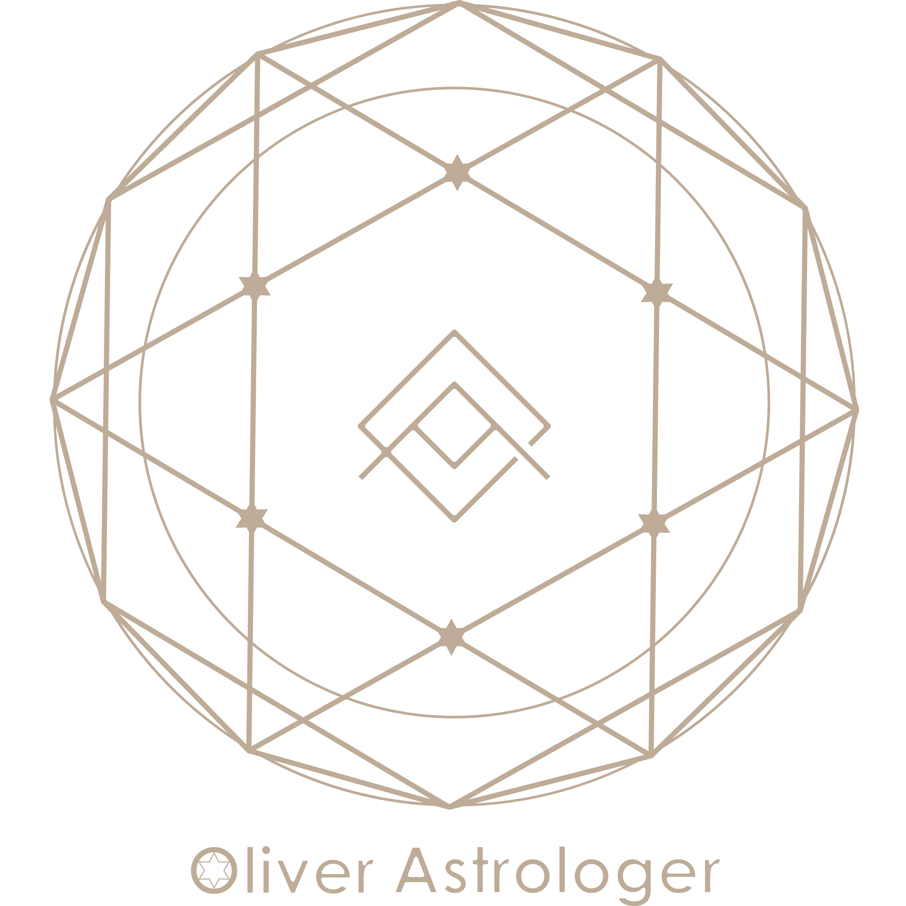
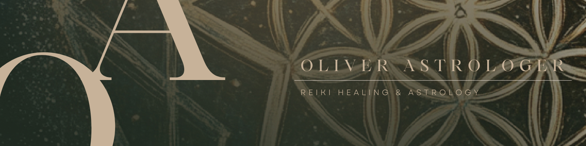

在星辰與森林之間，找尋靈魂的歸處
綜合古典與現代占星學，我擅長西洋占星、塔羅占卜與流年運勢。致力於透過星盤引導人們看見生命的無限可能。
身為靈氣導師，我深耕西洋臼井靈氣三階、卡魯那靈氣二階、現代靈氣極意皆傳及直傳靈氣初階。
同時擁有美國 NAHA 芳療 Level 1 認證，並將藥草魔法與自然能量融入諮詢，提供全方位的靈魂療癒指南。
「透過星辰的指引與大地的療癒，我們終將重新連結內在最純粹的光芒。」
點擊下方查看完整服務說明與定價
探索人生藍圖與靈魂天賦
掌握未來一年的關鍵機遇
平衡脈輪能量與釋放壓力
透過牌卡與占星骰解開當下迷惘
學習如何運用占星骰子，結合行星、星座與宮位的能量，為日常的疑惑提供快速而直覺的解答。適合占星初學者與對神祕學充滿好奇的靈魂。
帶領您從零開始建立扎實的西洋占星基礎。深入解析十大行星、十二星座、十二宮位與相位的互動，幫助您讀懂自己與他人的生命藍圖。
將神祕學與煉金術的內涵融入生活。每一件物品，都是為了喚醒你內在沉睡的力量。從香氛、藥草到儀式物件，開啟屬於你的質感療癒體驗。